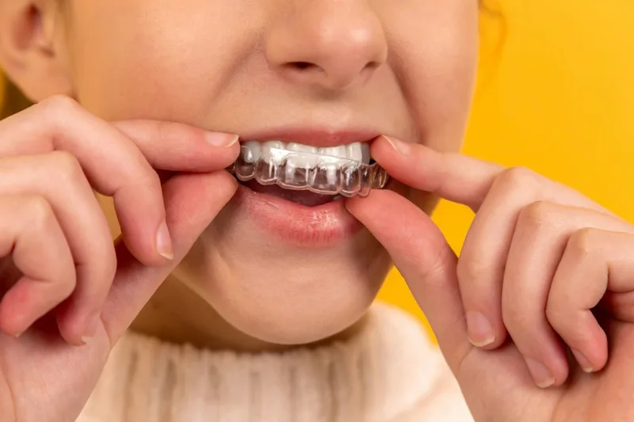
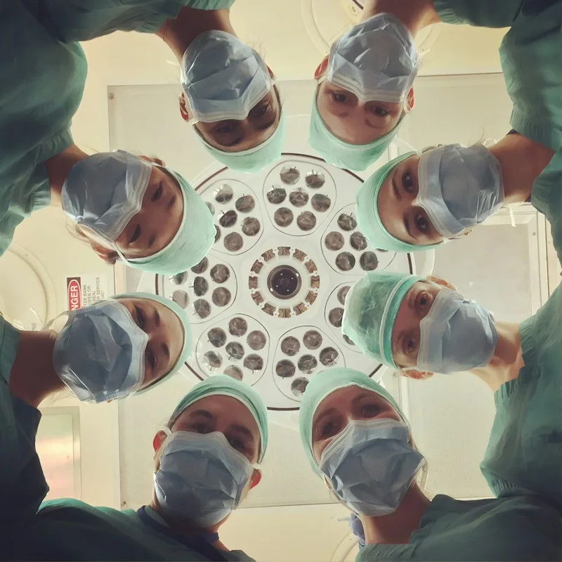
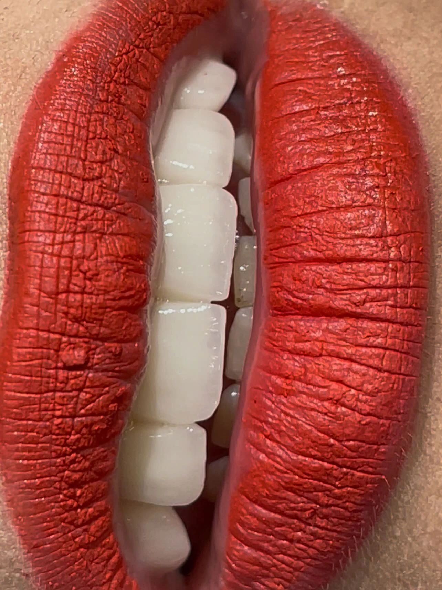
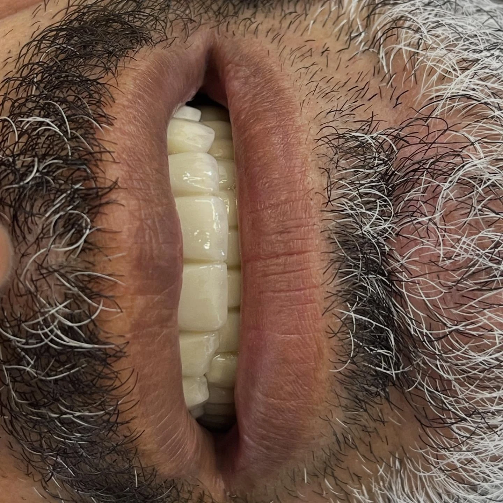
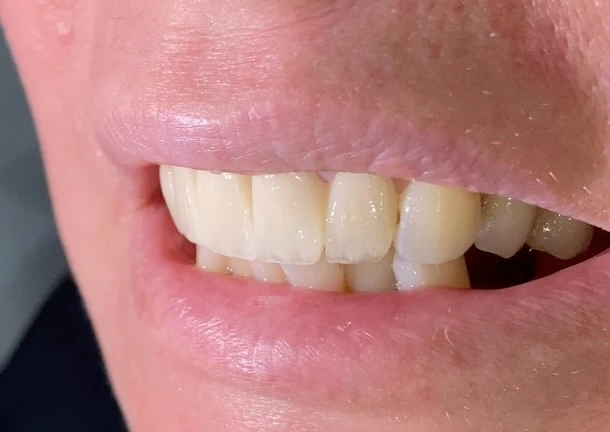
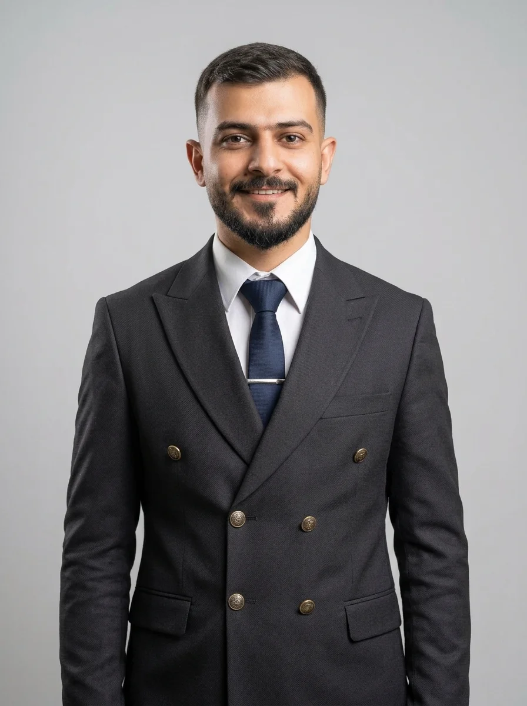
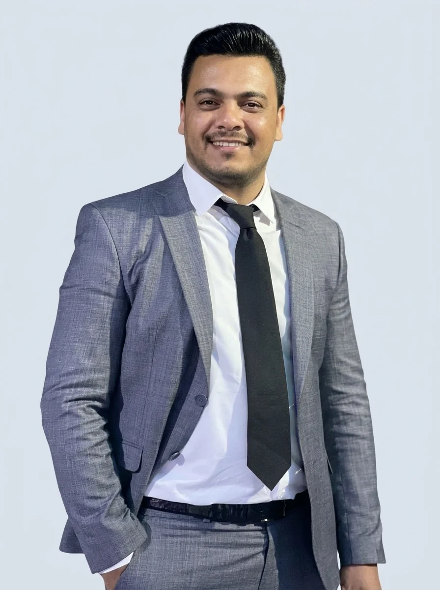

نسعى دائمًا لتحقيق التميز وبذل أقصى الجهود للوصول إلى أفضل النتائج من خلال الثقة المتبادلة والعمل المشترك مع مراجعينا.
تأسست عيادتنا عام 2018 في كركوك برؤية واضحة ترتكز على استعادة الوظيفة المثالية للأسنان والمضغ الطبيعي، مع تحقيق أعلى مستوى من الجماليات والتناغم الدقيق مع ملامح الوجه. نعتمد على أحدث التقنيات الرقمية المتقدمة ونستخدم حصرياً أفضل المواد السويسرية والألمانية المعتمدة عالمياً.
تخصصنا البارز في إعادة معالجة حشوة الجذر المعمولة بصورة غير صحيحة وتطهير قنوات العصب الدقيقة بمحركات روتاري متقدمة لإنقاذ السن الطبيعي من القلع.
إزالة آلام الأعصاب الحادة في جلسة واحدة
معالجة الالتهابات المزمنة للحشوات القديمة
حشو قنوات العصب بمواد حيوية معقمة تماماً

مظهر طبيعي غير مرئي
الحشوات التجميلية وترميم الأسنان
ترميم التسوس والكسور التالفة بحشوات الكمبوزيت الضوئية النانوية ذات التدرجات اللونية المطابقة تماماً للسن الطبيعي، لتستعيد قوة المضغ والمظهر المثالي.
مواد ترميم نانوية فائقة المتانة والالتصاق
تطابق لوني كامل ومظهر طبيعي غير ملحوظ
الحفاظ على أقصى قدر من بنية السن السليمة

بيئة لطيفة ومريحة
طب أسنان الأطفال والوقاية
عناية متخصصة بأسنان الصغار بأسلوب نفسي مرح وهادئ يكسر حاجز الخوف، مع تطبيق جلسات الفلورايد المقوي للمينا وحشوات الحفر الوقائية للحفاظ على سلامة الأسنان اللبنية والدائمة.
تعامل لطيف وصبور يبدد خوف الأطفال
جلسات وقاية وحماية المينا من التسوس
متابعة مراحل تبديل ونمو الأسنان الدائمة
حالات ونتائج موثقة
ابتسامات حقيقية من مراجعي عيادتنا
نتائج سريرية حقيقية تم إنجازها في عيادة الريسان لطب الأسنان، تعكس الدقة العلاجية والتناغم الجمالي مع ملامح الوجه. اضغط على أي حالة لعرض التفاصيل.

علاج وتجميل متكامل
استعادة التناغم والوظيفة المثالية
علاج الجذور وترميم تجميلي دقيق منح المراجع ابتسامة متناسقة وطبيعية 100%.

ترميم وتجميل الأسنان
تصميم ابتسامة طبيعية متألقة
إغلاق الفراغات وتعديل لون ومحاذاة الأسنان الأمامية لتعزيز ثقة المراجع.

دقة مجهرية متناهية
إنقاذ الأسنان وإعادة حشوة الجذر
علاج متقدم وتطهير القنوات بنجاح تام بعد معالجة سابقة غير صحيحة.
معاينة الحالة السريرية
كادرنا الطبي التخصصي
أطباء متميزون يكرسون خبراتهم لابتسامتك
نخبة من أطباء الأسنان الحاصلين على أعلى المؤهلات العلمية، يجمعون بين المعرفة الأكاديمية والمهارة السريرية المتقنة.

د. أحمد وادي
طبيب أسنان عام • Dentist, B.D.S
خريج كلية طب الأسنان (Graduation from K.D.C). يتمتع بخبرة واسعة في جراحة وتجميل الأسنان، علاجات الجذور الدقيقة، والحشوات التجميلية المتطورة وفق أحدث المعايير العلمية.
🎓 Graduation from K.D.C • B.D.S

د. إبراهيم السيد (حسن)
طبيب أسنان عام • Dentist, B.D.S
طبيب أسنان عام متخصص في زراعة الأسنان الرقمية، استعادة الوظيفة المثالية للأسنان، والتخصص الدقيق في إعادة معالجة حشوات الجذور المعقدة وتصميم الابتسامة التجميلية.
🦷 Dentist, B.D.S • Dental Surgery & Aesthetics
لماذا عيادة الريسان؟
معايير طبية استثنائية لصحة فمك
نلتزم بتقديم أرقى مستويات الرعاية الصحية لضمان راحتك وسلامتك ورضاك التام عن النتائج.
تعقيم صارم 100%
نطبق أعلى بروتوكولات التعقيم الجراحي العالمي واستخدام أدوات معقمة فردياً لضمان سلامتك وسلامة عائلتك.
خبرة موثوقة منذ 2018
أكثر من 8 سنوات من التميز والسمعة الطيبة في كركوك، ومئات الحالات الناجحة التي تعكس جودة عملنا وثقة مراجعينا.
علاج هادئ بدون ألم
نعتمد تقنيات التخدير الموضعي الحديث والتعامل الإنساني اللطيف لتجربة علاجية مريحة وخالية تماماً من الرهبة أو الخوف.
أسعار مناسبة وشفافية
نؤمن بحق الجميع في ابتسامة صحية؛ نقدم خطط علاج واضحة بأسعار مدروسة وتنافسية مع الحفاظ على أرقى المواد السويسرية.
تجارب وآراء المراجعين
ماذا يقول مراجعونا الكرام؟
اعتزازنا الأكبر ينبع من رضا وثقة أهالينا في كركوك الذين شاركونا تجاربهم الإيجابية بعد العلاج.
★★★★★
"عالجت سن كان عليه حشوة جذر قديمة ملتهبة ومؤلمة جداً. دكتور أحمد ودكتور إبراهيم اشتغلوا بدقة فائقة ونظفوا القنوات بدون ما أحس بأي ألم، وانتهى وجع السن تماماً من أول جلسة. بارك الله فيهم وعاشت إيدهم."
ع
عمر الشمري
مراجعة إعادة حشوة جذر • كركوك
★★★★★
"أجمل جلسة تبييض وابتسامة هوليود حصلت عليها. العيادة راقية جداً ونظيفة ومعقمة 100%، والدكاترة قمة في الأخلاق والذوق وشرحوا لي كل خطوة بالتفصيل. أنصح الجميع بزيارة عيادة الريسان بدون تردد."
س
سارة الخالدي
تبييض وتجميل الأسنان • كركوك
★★★★★
"أنا بطبيعتي أخاف جداً من طبيب الأسنان، لكن الأسلوب الهادئ والتخدير الممتاز في عيادة الريسان خلاني أرتاح تماماً. عملت زراعة سن وحشوات تجميلية وكانت التجربة أسهل بكثير مما تخيلت. شكراً للدكتور إبراهيم."
م
محمد البياتي
زراعة وحشوات تجميلية • كركوك
الأسئلة الشائعة
إجابات على أكثر استفساراتكم تكراراً
جمعنا لك كل ما يهمك معرفته حول مواعيد العمل، أساليب العلاج، وطرق الحجز في عيادة الريسان لطب الأسنان.
نستقبل مراجعينا الكرام 6 أيام في الأسبوع من يوم السبت حتى الخميس، من الساعة 3:00 بعد الظهر حتى الساعة 10:00 مساءً. يوم الجمعة هو عطلة العيادة الأسبوعية.
إطلاقاً. نستخدم في عيادة الريسان أحدث تقنيات التخدير الموضعي الموضعي وأجهزة الروتاري الرقمية الدقيقة، مما يضمن أن تكون الجلسة مريحة وسلسة تماماً وخالية من أي شعور بالألم.
في بعض الحالات قد تفشل حشوة الجذر القديمة بسبب عدم تنظيف كافة القنوات أو تسرب البكتيريا، مما يسبب التهاباً مزمناً في عظم الفك. نحن متخصصون بإزالة الحشوة القديمة وتطهير القنوات بأحدث الأجهزة وإعادة حشوها بإحكام لإنقاذ السن وتفادي قلعه.
تقع عيادتنا في كركوك - شارع النخيل. الموقع ميسر ومريح للوصول وتتوفر أماكن انتظار للسيارات. يمكنك فتح الموقع مباشرة عبر تطبيق Google Maps من خلال الزر في أسفل الصفحة.
يمكنك الحجز بسهولة بالغة إما عبر الاتصال المباشر على الرقم 07714661043، أو عبر إرسال بياناتك في نموذج الحجز الإلكتروني أدناه وسيتم تحويلك فوراً لمحادثة واتساب مباشرة مع الفريق الطبي.
احجز موعدك الآن
تواصل مباشرة مع أطبائنا واحجز استشارتك
املأ النموذج أدناه لتأكيد حجزك عبر الواتساب فوراً، أو تفضل بزيارتنا في عيادتنا بشارع النخيل في كركوك.
نموذج حجز الموعد والكشف
املأ بياناتك وسيتم إعداد رسالة الحجز تلقائياً لإرسالها عبر تطبيق WhatsApp.